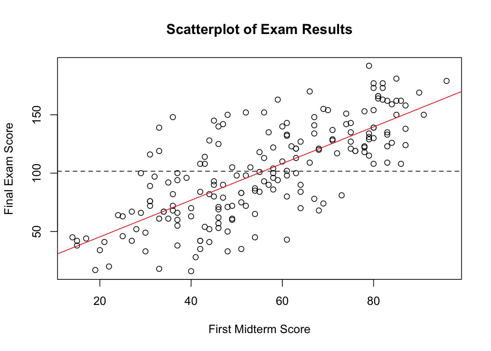

3 Linear Regression
3.1 Table of Contents
- Pearson Correlation
- Simple Linear Regression
- Scatterplots
- Transformations
3.2 Pearson Product-Moment Correlation Coefficient
3.2.1 Definition
Commonly referred to as Pearson correlation or simply correlation, Pearson product-moment correlation coefficient is a standardized form of the covariance. Given the formula for variance,
\[ Var(Y) = \frac{\sum_{i=1}^n(Y_i - \bar{Y})^2}{n-1} \] one should not be too surprised to see the formula for covariance.
\[ Cov(X,Y) = \frac{\sum_{i=1}^n(X_i - \bar{X})(Y_i-\bar{Y})}{n-1} \]
It should thus be clear that variance of Y is the covariance of Y with Y itself, i.e., variance is a special case of covariance.
\[ Cov(Y,Y) = \frac{\sum_{i=1}^n(Y_i - \bar{Y})(Y_i-\bar{Y})}{n-1} = \frac{\sum_{i=1}^n(Y_i - \bar{Y})^2}{n-1} = Var(Y) \]
If we divide \(Cov(X,Y)\) by the corresponding standard deviations involved with regard to X and Y, we get Pearson correlation. In other words, Pearson correlation is the covariance of z-scores.
\[ r = \frac {\color{red}{Cov(X,Y)}} {s_Xs_Y} = \frac {\color{red}{\sum_{i=1}^n(X_i - \bar{X})(Y_i-\bar{Y})}} {s_X s_Y \color{red}{(n-1)}} = \frac{1}{n-1} \sum_{i=1}^n \color{gold}{\frac{(X_i-\bar{X})}{s_X}} \color{blue}{\frac{(Y_i-\bar{Y})}{s_Y}} = \frac{1}{n-1} \sum_{i=1}^n \color{gold}{z_X} \color{blue}{z_Y} \]
3.2.2 Properties of Pearson Correlation
- The correlation \(r\) is always between -1 and 1. Values of \(r\) close to 0 indicate a weak linear relationship. Values of \(r\) close to 1 imply a strong positive linear relationship, whereas values close to -1 imply a negative linear relationship. The extreme cases of \(r=-1\) or \(r=1\) occur only when the points in a scatterplot lie exactly along a straight line. In other words, signs of \(r\) show the direction and absolute values of \(r\) indicate the strength of the relationship.
- The correlation \(r\) does not change when we change the units of measurement of either X or Y or both. This should be clear since correlation \(r\) uses the unitless z-scores.
- The correlation \(r\) does not distinguish between independent and dependent variables. Reversing X and Y gives identical results. It has to be emphasized again that statistics knows no causal directions. Statistics on its own only reveals associations, not causations.
3.2.3 Limitations of Pearson Correlation
- Pearson correlation measures only linear association. Always plot your data before calculating \(r\).
TODO: need a graph here!
- Calculation of Pearson correlation invovles means and standard deviations, and hence \(r\) is susceptible to outliers. Always plot your data and look for potentially influential data points (which is defined later).
3.2.4 Other Issues on the Usage of Pearson Correlation
- Pearson correlation based on averaged data is usually higher than the correlation between the same variables using data for individuals. For example, the average weight of infants against their age in months would give a very strong positive correlation near one. A plot of weight against age for individual infants will show much more scatter and lower correlation. On the contrary, using a composite score averaged from multiple items measuring motivation usually gives much more consistent, and hence reliable, result.
- When the data we use do not contain information on the full range of independent and dependent variables, we have the restricted-range problem. When data suffer from restricted range, \(r\) is usually lower than it would be if the full range could be observed.
TODO: need an example here!
- Lurking variables can make correlation results misleading. This problem is not specific to Pearson correlation. All measures of two-way relationships suffer from this problem, which is known as the interaction effect.
TODO: need a graph here!
- Extrapolation (using a model far beyond the range of data used to fit it) often produces unreliable predictions. This problem is not specific to Pearson correlation. All models suffer from some generalizability concern, which might raise the concern of omitted-variable bias (e.g., individuals possessing values beyond the observed range of values might systematically differ from individuals currently in the sample).
3.3 Simple Linear Regression
3.3.1 Independent Variable: From Categorical to Continuous
mid1cat = cut(xdat$mid1, breaks=quantile(xdat$mid1), include.lowest=T)
xdat = data.frame(xdat, mid1cat)
boxplot(mid3 ~ mid1cat, data=xdat,
main="Boxplot of Exam Results",
xlab="First Midterm Score Category",
ylab="Final Exam Score")
abline(h=mean(xdat$mid3,na.rm=T), lty=2)
plot(mid3 ~ mid1, data=xdat,
main="Scatterplot of Exam Results",
xlab="First Midterm Score",
ylab="Final Exam Score")
mod = lm(mid3 ~ mid1, data=xdat)
abline(h=mean(xdat$mid3,na.rm=T), lty=2)
abline(coef(mod)[1], coef(mod)[2], col="red")
3.3.2 Fitting a Straight Line to Data
Let us fit a straight line with an intercept and a slope. As a result, the conditional expectation of Y is now a function of X and the prediction model with unknown population parameters can be expressed as follows. To note, “the conditional expectation of Y” is just a fancy way of saying “the predicted values of Y” or “the prediction model of Y”. They are all different ways of saying the same thing.
\[ E(Y|X) = \beta_0 + \beta_1X \]
Accordingly, the predition model of Y with sample parameters is:
\[ \hat{E}(Y_i|X_i) = \hat{\beta}_0 + \hat{\beta}_1X_i \]
In practice, we often use simplified notations to represent the preceding formula.
\[ \hat{Y}_i = b_0 + b_1X_i \]
where \(\hat{Y}_i \equiv \hat{E}(Y_i|X_i)\), \(b_0 \equiv \hat{\beta}_0\) and \(b_1 \equiv \hat{\beta}_1\). This is the formula for the deterministic part of the linear regression. By adding the stochastic part, we have
\[ Y_i = \hat{Y}_i + \hat{R}_i = b_0 + b_1X_i + e_i \]
We can describe the previous simple linear model as the regression of Y on X. At this moment, this expression might be exceedingly clear to you, since the use of Y and X makes it abundently clear which one is the DV and which one is the IV. In a real case, however, one might be confused over which is which. For example, with the expression “regressing income on education”, one must know that income is Y and education is X.
3.3.3 The Least-Squares Method
The least-squares method is one of the ways to solve the above equation for the unknown parameters \(b_0\) and \(b_1\). The official name for this method is ordinary least squares (OLS) method.
\[ SSR = \sum_{i=1}^n R_i^2 = \sum_{i=1}^n (Y_i-\hat{Y}_i)^2 = \sum_{i=1}^n (Y_i - (b_0 + b_1X_i))^2 \]
The idea is that we would find \(b_0\) and \(b_1\) such that \(SSR\) would reach its minimum. Remember, the last time we use this idea, we end up finding the mean.
\[ SSR = \sum_{i=1}^n (Y_i-c)^2 \] Solving for \(c\) that minimizes \(SSR\) gives \(c = \bar{Y}\). Applying the idea above, we would eventually find the following solutions.
\[ b_1 = \frac{\sum(X_i-\bar{X})(Y_i-\bar{Y})} {\sum(X_i-\bar{X})^2} \] and
\[ b_0 = \bar{Y} - b_1 \bar{X} \]
3.3.4 Interpretations of Regression Coefficients

- It should be clear that \(b_0\) is the intercept, which is interpreted as the value of Y when X = 0. To note, values of X oftentimes cannot be exactly 0, e.g., weight or IQ. In such a case, the interpretation of \(b_0\) would not make intuitive sense (since no one would have 0 weight or 0 intelligence); the intercept is there only to make the math work.
- To make the interpretation of \(b_0\) meaningful, we can choose to center X with respect to its mean, i.e. \(X^* = X - \bar{X}\). Now \(b_0\) is the value of Y when \(X = \bar{X}\).
- In contrast, \(b_1\) is the slope, which is interpreted as the amount of change in Y when X changes by 1 unit of measurement. As a result, the value of \(b_1\) would change, if the unit of measurement for Y or X or both changes.
3.3.5 Understanding the Estimators
There are several ways to look at \(b_1\), each provides some insight from different perspectives.
\[ b_1 \overset{(1)}{=} \frac { \color{blue}{ \sum(X_i-\bar{X})(Y_i-\bar{Y}) } } { \color{red}{\sum(X_i-\bar{X})^2} } \overset{(2)}{=} r \frac{s_Y}{s_X} \overset{(3)}{=} \color{blue}{\sum} \left( \frac{ \color{blue}{ (X_i-\bar{X}) } }{ \color{red}{SSX} } \cdot \color{blue}{(Y_i-\bar{Y})} \right) \overset{(4)}{=} \frac { \color{blue}{Cov(X,Y)} } { \color{red}{Var(X)} } \] Note: Similar to \(\bar{X}\), \(SSX = (n-1)Var(X)\) is treated as a constant and can therefore move in and out of the summation sign \(\sum\) freely.
- When we change the scale of \(X\) to \(cX\) (without loss of generality, let’s assume \(c\ge1\)), the term \((X_i-\bar{X})\) would change by \(c\) and \((X_i-\bar{X})^2\) would change by \(c^2\), and hence we would expect \(b_1\) to become \(1/c \cdot b_1\). This result makes sense, since increase in the scale of X is canceled out by decrease in the coefficient of X such that their product remains the same. Similarly, when we change the scale of \(Y\) to \(cY\), we would expect \(b_1\) to become \(c b_1\).
R_Proof: Linear Transformations
x = rnorm(10000, mean=1, sd=5)
c = 10
cx = c * x
y = 2*x + rnorm(10000, 0, 5)
cy = c * y
dat = data.frame(x, cx, y, cy)
b1 = lm( y ~ x, data=dat)$coefficients[2]
b2 = lm( y ~ cx, data=dat)$coefficients[2]
b3 = lm(cy ~ x, data=dat)$coefficients[2]
bs = c(c,b1,b2,b3)
names(bs) = c("c","x","cx","cy")
bs## c x cx cy
## 10.0000000 2.0054926 0.2005493 20.0549261- When X and Y are standardized z-scores, which entails that \(s_X=1\) and \(s_Y=1\), \(b_1\) becomes the Pearson correlation \(r\). \[ b_1 = \color{red}{r} \cdot \frac{s_Y}{s_X} = \color{red}{ \frac {\sum_{i=1}^n(X_i - \bar{X})(Y_i-\bar{Y})} {s_X s_Y (n-1)} } \cdot \frac{s_Y}{s_X} = \frac { \sum_{i=1}^n(X_i - \bar{X})(Y_i-\bar{Y})} {(n-1)~ \color{gold}{s_X^2} } = \frac { \sum(X_i-\bar{X})(Y_i-\bar{Y}) } { \color{blue}{\sum(X_i-\bar{X})^2} } = b_1 \]
where
\[ \color{gold}{s_X^2} = \frac{ \color{blue}{\sum (X_i-\bar{X})^2} }{n-1} \]
- If we regard \((X_i-\bar{X})/SSX\) as a weight, it is thus clear that \(X_i\) that is farther away from \(\bar{X}\) has stronger influence on \(\hat{\beta}_1\). In fact, if a singular data point has undue (i.e., overly large) influence on regression coefficients, it is regarded as an influential data point. It should be clear that outliers are mostly likely to become influential data points.
\[ b_1 = \sum \left( \color{red}{ \frac{(X_i-\bar{X})}{SSX} } \cdot (Y_i-\bar{Y}) \right) \overset{*}{=} \sum \left( \color{red}{ \frac{(X_i-\bar{X})}{SSX} } \cdot Y_i \right) = \sum \left( \color{red}{w_i} \cdot Y_i \right) \]
Note: To see how \(\overset{*}{=}\) is true, let \(c\) be a constant and we have
\[ \sum (X_i - \bar{X})(Y_i \pm c) = \sum (X_i - \bar{X})Y_i \pm \sum (X_i - \bar{X})c = \sum (X_i - \bar{X})Y_i \pm c\sum (X_i - \bar{X}) = \sum (X_i - \bar{X})Y_i \pm c \cdot 0 = \sum (X_i - \bar{X})Y_i \]
- Measurement error in \(X\) always shrinks the magnitude of \(b_1\) towards 0, whereas measurement error in \(Y\) does not affect \(b_1\). To note, measurement error is regarded as random noise. To see this, let \(X^* = X+E\), where \(E\) denotes random error.
\[ Cov(X^*,Y) = Cov(X+E,~Y) = Cov(X,Y) + Cov(E,Y) = Cov(X,Y) \] \[ Var(X^*) = Var(X+E) = Var(X) + Var(E) + 2Cov(X,E) = Var(X) + Var(E) \] Note: Both \(Cov(Y,E)=0\) and \(Cov(X,E)=0\) are true, because random noise by definition does not co-vary with anything. As a result, we have
\[ b_1^* = \frac{Cov(X^*,Y)}{Var(X^*)} = \frac{Cov(X+E,~Y)}{Var(X+E)} = \frac{Cov(X,Y)}{Var(X)+Var(E)} < \frac{Cov(X,Y)}{Var(X)} = b_1\]
R_Proof: Measurement Error
noise = rnorm(length(x), mean=0, sd=sd(x))
nx = x + noise
noise = rnorm(length(y), mean=0, sd=sd(y))
ny = y + noise
dat = data.frame(dat, nx, ny)
b4 = lm( y ~ nx, data=dat)$coefficients[2]
b5 = lm(ny ~ x, data=dat)$coefficients[2]
names = names(bs)
bs = c(bs, b4, b5)
names(bs) = c(names,"noise_x","noise_y")
bs## c x cx cy noise_x noise_y
## 10.0000000 2.0054926 0.2005493 20.0549261 0.9921121 1.9925041Note: The result from adding noise to Y changes slightly, because the cor(Y,E) in our sample is -0.0136111, which is not strictly 0 due to sampling randomness.
3.3.6 Residual Variance
Residual variance (aka conditional variance) is given as follows.
\[ \hat{\sigma}^2 = MSR = \frac{SSR}{DFR} = \frac{\sum R_i^2}{df} = \frac{\sum_{i=1}^n (Y_i-\hat{Y_i})^2}{df} = \frac{\sum_{i=1}^n (Y_i - (b_0 + b_1X_i))^2}{n-2} \]
It is thus clear that RMSE (i.e., root of mean squares residual) is the residual standard deviation, aka conditional standard deviation.
Notation-wise, for the sake of simplicity, we will use \(s\) to denote the residual standard deviation \(\hat{\sigma}\) and hence \(s^2\) to represent the residual variance \(\hat{\sigma}^2\).
3.3.7 Standard Error of the Slope
Given the residual standard deviation,
\[ \hat{\sigma} = \sqrt{\frac{\sum R_i^2}{df}} = \sqrt{ \frac{\sum_{i=1}^n (Y_i-\hat{Y_i})^2}{n-2} } = \sqrt{ \frac{\sum_{i=1}^n (Y_i - (b_0 + b_1X_i))^2}{n-2} } \] The standard errors of \(b_1\) and \(b_0\) are given as follows.
\[ \hat{\sigma}_{b_1}^2 = \frac{\hat{\sigma}^2}{\sum (X_i-\bar{X})^2} = \frac{\hat{\sigma}^2}{\text{SSX}} = \frac{\hat{\sigma}^2}{(n-1) Var(X)}\] and \[ \hat{\sigma}_{b_0}^2 = \frac{\hat{\sigma}^2}{n} \cdot \frac{\sum (X_i)^2}{\sum (X_i-\bar{X})^2} \]
It must be emphasized that we usually do not care about inference regarding \(b_0\). The standard error of \(b_0\) is provided here primarily for the sake of completeness rather than for any praticial value.
- It is clear that the standard error of \(b_1\) is directly proportional to the residual standard deviation. In other words, if the overall fit of the line is good, the RMSE (i.e., \(\hat{\sigma}\)) will be small and hence \(\hat{\sigma}_{b_1}\).
- When n is large, \(\hat{\sigma}\) would be small and \(SSX\) would be large, which drives \(\hat{\sigma}_{b_1}\) to become even smaller.
- All else being equal, greater intrinsic variation in X would result in a larger \(SSX\), which in turn produces a small \(\hat{\sigma}_{b_0}\). Results from surveys using a 1-5 Likert scale is a good example. Sometimes, the wording of a question is phrased in such a way that the responses to the question would only span a restricted range (e.g., registering exclusively positive ratings). This clearly leads to reduced intrinsic variation in X.
3.3.8 Effect Size and Standardized Coefficients
Since the magnitude of \(\beta_0\) and \(\beta_1\) is subject to change with respect to the units of measurement adopted in Y and X. Therefore, it would be helpful to derive some kind of standardized coefficients such that sizes of the coefficients are invariant to the choice of measurement units. After standardizing both X and Y, the resultant coefficients are standardized coefficients, known as the beta coefficients. As shown previously, in simple OLS regression, standardized \(b_1\) is identical to the Pearson correlation \(r\). Beta coefficients are therefore used as an effect size measure in communicating the substantive practical significance of a linear relationship.
Let \(s_X\) and \(s_Y\) be the standard deviations of X and Y, we have \[ r = b_{\text{standardized}} = \frac{s_X}{s_Y} \cdot b_{\text{original}} \]
For certain problems, sometimes we would only want to standardize either X or Y, but not both of them. For example, when X is an ordinal variable measured on a 1-5 Likert scale. We might want to standardize only Y and claim that 1 point increase on the Likert scale would result in \(b_1\) standard deviations of increase in Y.
3.3.9 ANOVA for Regression
HOWTO: how to add lines above and below the table?
HOWTO: how to "center"" content in a cell
| SS | DF | MS | |
|---|---|---|---|
| \[\mathbf{Total}~~\] | \[~~\sum(Y_i-\bar{Y})^2~~\] | \[~~n-1~~\] | \[~~\frac{1}{n-1} \sum (Y_i-\bar{Y})^2\] |
| \[\mathbf{Model}~~\] | \[~~\sum(\hat{Y}_i-\bar{Y})^2~~\] | \[~~(1+p)-1~~\] | \[~~\frac{1}{p}\sum (\hat{Y}_i-\bar{Y})^2\] |
| \[\mathbf{Residual}~~\] | \[~~\sum(Y_i - \hat{Y}_i)^2~~\] | \[~~n-(1+p)~~\] | \[\frac{1}{n-1-p}\sum (Y_i-\hat{Y}_i)^2\] |
where \(\hat{Y}_i = b_0 + b_1X_i\) and \(p\) is the number of features, i.e., the number of parameters minus 1 to exclude the intercept.
\[ R^2 = \frac{\text{SSM}}{\text{SST}} = \frac{ \sum(\hat{Y}_i-\bar{Y})^2 }{ \sum(Y_i-\bar{Y})^2 } \] and
\[ F = \frac{MSM}{MSE} = \frac{ \frac{1}{p}\sum (\hat{Y}_i-\bar{Y})^2 }{ \frac{1}{n-1-p}\sum (Y_i-\hat{Y}_i)^2 } \] where \(F(p, n-1-p)\) and \(p=1\) in the case of simple linear regression.
TODO: check out p594 in IPS
R_Proof: R-square and F-test
mod = lm(mid3 ~ mid1, data=xdat)
yhat = predict(mod)
ybar = mean(xdat$mid3, na.rm=T)
ssm = sum((yhat-ybar)^2, na.rm=T)
sst = sum((xdat$mid3-ybar)^2, na.rm=T)
r2 = ssm/sst
r = cor(xdat$mid3, xdat$mid1, use="pairwise")
# cor(na.omit(xdat$mid3), yhat)
c(r2, r^2)## [1] 0.5494976 0.54949763.4 Non-linear Relations
3.4.1 Log-transformations
- log-transformation is one way for handling non-linearity if the relation between IV and DV is indeed connected by a log-based relationship.
- log-transformation is commonly used for handling highly skewed variable by taknig advantage of the suppressive property of logarithm (e.g., \(\log_{10}(10)=1\) and \(\log_{10}(100)=2\)). As a result, many highly skewed variables, after log-transformations, would look much like a normal distribution.
For simple linear regression, the linear model is represented as follows.
\[ Y = b_0 + b_1X + e \]
Take the derivative with respect to \(X\) on both sides, we have
\[ \frac{dY}{dX} \approx \frac{\Delta Y}{\Delta X} = \frac{d(b_0+b_1X)}{dX} = b_1 \] and hence
\[ \Delta Y = b_1 \Delta X \] In this case, the interpretation derived from a Calculus perspective readily agrees with that from an arithmetic perspective, i.e., when X increases by 1 unit (i.e., \(\Delta X=1\)), Y would increase by an average of \(b_1\) (i.e., \(\Delta Y = b_1\)). This situation would not be true under log-transformations.
3.4.1.1 Linear-log Model: Log-transformation on X
Now, let’s consider log-transforming X. The linear model would become \[ Y = b_0 + b_1 \log(X) + e \] To note, the log notation in this textbook would always denote the natural logarithm with base \(e \approx 2.718\), which in some textbooks is represented by ln.
Simple rules of arithmetic dictate that \(b_1\) is the expected units of change in Y given a one-unit increase in log(X), which means
\[ \log(X) + 1 = \log(X) + \log(e) = \log(eX) \]
This result makes it clear that adding 1 to log(X) is equivalent of multipling X by \(e \approx 2.718\). In other words, Y is expected to change by \(b_1\) units when X increases by approximately 1.72 times or 172%.
Let’s look at this from a Calculus perspective by taking the derivative with respect to X on the both sides.
\[ \frac{dY}{dX} \approx \frac{\Delta Y}{\Delta X} = \frac{d(b_0+b_1 \log(X))}{dX} = b_1 \cdot \frac{1}{X} \] and hence
\[ \Delta Y = b_1 \cdot \frac{\Delta X}{X} = \frac{b_1}{100} \cdot \left( 100 \cdot \frac{\Delta X}{X} \right) = \frac{b_1}{100} \cdot p \]
where \(\Delta X/X\) represents the proportion of change in X and hence \(100 \cdot \Delta X/X\) denotes the percentage of change in X. In other words, 1% increase in X, namely \((100 \cdot \Delta X / X) = 1\), would translate into \(b_1/100\) units of increase in \(Y\) or one hundredth of Y. To note, this Calculus-inspired percentage interpretation is only true (i.e., the \(\approx\) sign would hold), if \(\Delta X\) is small (e.g., 1%).
Now let’s re-examine this interpretation from the arithmetic perspective, where a p percent increase in X would be \(X \cdot (100+p)/100 = X \cdot (1+p/100)\). Let \(Y_0\) and \(Y_p\) be the values of Y corresponding to X and X with p percent increase.
\[ Y_0 = b_0 + b_1 \log(X) + e \] and \[ Y_p = b_0 + b_1 \log \left( X \cdot \frac{100+p}{100} \right) + e \] and
\[ \frac{\Delta X}{X} = \frac{X \cdot (1+p/100) - X}{X} = \frac{p}{100} \] or
\[ 100 \cdot \frac{\Delta X}{X} = p \]
Hence, a p percent increase in X would result in
\[ \Delta Y = Y_p - Y_0 = b_1 \left( \log \left( (1+\frac{p}{100}) \cdot X \right) - \log(X) \right) = b_1 \log \left( 1 + \frac{p}{100} \right) \]
This result indicates that p = 1 or 1% increase in X would result in \(b_1 \log(1.01) \approx b_1 \cdot 0.01\). This interpretation is scalable up to about 10% (i.e., the exact arithmetic and the approximate Calculus interpretations agree only up to about 10%), since p = 10 or 10% increase in X would result in \(b_1 \log(1.10) \approx b_1 \cdot 0.10\). The following table shows the degree of deviations under and beyond 10% change in X.
| proportion increase in X | percentage increase in X | increase in Y |
|---|---|---|
| \(\Delta X/X = p/100\) | \(100 \cdot \Delta X/X = p\) | \(b_1 \log(1+p/100)\) |
| 0.01 | 1% | \(b_1 \cdot 0.01\) |
| 0.05 | 5% | \(b_1 \cdot 0.05\) |
| 0.10 | 10% | \(b_1 \cdot 0.10\) |
| 0.20 | 20% | \(b_1 \cdot 0.18\) |
| 0.50 | 50% | \(b_1 \cdot 0.41\) |
| 1.00 | 100% | \(b_1 \cdot 0.69\) |
| 1.72 | 172% | \(b_1 \cdot 1.00\) |
TODO: add a shiny app to supplement the table!
curve(log, from=0.01, to=4, ylim=c(-4,4))
curve(x-1, add=T, col=2)
abline(v=0, h=0, lty=2)
In summary, given the discussions above, the following statements are equivalent (or almost equivalent).
- When log(X) increases by 1 unit, Y would change by an average of \(b_1\).
- When X is multiplied by 2.72, Y would change by an average of \(b_1\).
- When X increases by 172%, Y would change by an average of \(b_1\).
- When X increases by p%, Y would change by an average of \(b_1 \log(1+p/100)\).
- When X increases by 1%, Y would change by an average of \(b_1/100\).
- When X increases by 10%, Y would change by an average of \(b_1/10\).
3.4.1.2 Log-linear Model: Log-transformation on Y
\[ \log(Y) = b_0 + b_1X + e \]
Take the derivative with respect to X on both sides, we have
\[ \frac{1}{Y} \cdot \frac{dY}{dX} \approx \frac{1}{Y} \cdot \frac{\Delta Y}{\Delta X} = b_1 \] and hence
\[ \frac{\Delta Y}{Y} = b_1 \cdot \Delta X \]
Replacing proportion of change by percentage of change gives
\[ 100 \cdot \frac{\Delta Y}{Y} = 100 \cdot b_1 \cdot \Delta X \] which leads to the interpretation that 1 unit increase in X would result in \(100 \cdot b_1\) percent increase in Y. Similar to the previous case, this Calculus interpretation is only true when \(b_1\) is less than 0.1 or 10%.
Let’s examine a precise arithmetic interpretation. From \(\log(Y) = b_0 + b_1X + e\), we have
\[ Y = e^{(b_0 + b_1X + e)} \]
Let \(Y_0\), \(Y_1\), and \(Y_p\) be the values of Y corresponding to X, X+1, and X+p. We have
\[ Y_0 = e^{(b_0 + b_1X + e)} \] and
\[ Y_1 = e^{(b_0 + b_1(X+1) + e)} = e^{(b_0 + b_1X + e)} \cdot e^{b_1} = Y_0 \cdot e^{b_1} \] which implies that 1 unit increase in X would result in Y multiplied by \(e^{b_1}\).
\[ \frac{\Delta Y}{Y_0} = \frac{Y_1 - Y_0}{Y_0} = \frac{Y_0 \cdot e^{b_1} - Y_0}{Y_0} = \frac{Y_0 \cdot (e^{b_1} - 1)}{Y_0} = (e^{b_1}-1) \]
Replacing proportion of change by percentage of change gives
\[ 100 \cdot \frac{\Delta Y}{Y_0} = 100 \cdot (e^{b_1}-1) \]
The Taylor expansion of \(e^b\) gives the following result \[ e^b = 1 + b + \frac{b^2}{2!} + \frac{b^3}{3!} + \cdots+\frac{b^n}{n!} \] When b is small (e.g. \(b \le 0.1\)), \(e^b \approx 1 + b\) and hence \(e^b - 1 \approx b\). In other words, when \(b_1\) is less than 0.1 (as suggested by the table below), the exact arithmetic interpretation agrees with the approximate Calculus interpretation.
b = c(c(0.01,0.05,0.1,0.15), seq(0.2, 1, by=0.1))
p = round(exp(b)-1, 2)
mat = cbind(b,p)
colnames(mat) = c("b","exp(b)-1")
mat## b exp(b)-1
## [1,] 0.01 0.01
## [2,] 0.05 0.05
## [3,] 0.10 0.11
## [4,] 0.15 0.16
## [5,] 0.20 0.22
## [6,] 0.30 0.35
## [7,] 0.40 0.49
## [8,] 0.50 0.65
## [9,] 0.60 0.82
## [10,] 0.70 1.01
## [11,] 0.80 1.23
## [12,] 0.90 1.46
## [13,] 1.00 1.72In summary,
- When X increases by 1, log(Y) would increase by \(b_1\).
- When X increases by 1, Y would be multiplied by \(e^{b_1}\).
- When X increases by c, Y would be multiplied by \(e^{c b_1}\).
- When X increases by 1, Y would increase by \(100 \cdot (e^{b_1}-1)\) percent.
- When X increases by 1 and when \(b_1 \le 0.1\), Y would increase by \(100 \cdot b_1\) percent.
3.4.1.3 Log-log Model: log-transformations on X and Y
\[ \log(Y) = b_0 + b_1 \log(X) + e \]
Taking the derivative with respect to X on both sides gives
\[ \frac{1}{Y} \cdot \frac{dY}{dX} \approx \frac{1}{Y} \cdot \frac{\Delta Y}{\Delta X} = \frac{b_1}{X} \]
and hence
\[ 100 \cdot \frac{\Delta Y}{Y} = b_1 \cdot \left( 100 \cdot \frac{\Delta X}{X} \right) \] which implies that 1 percent increase in X would result in \(b_1\) percent increase in Y.
With the log-log model, the coefficient \(b_1\) is called elasticity in economics.
In summary,
- When log(X) increase by 1, log(Y) would increase by \(b_1\).
- When X is multiplied by \(e\), the expected value of Y would increase by multiplying \(e^{b_1}\).
- When X increases by p percent, the expected value of Y would increase by multiplying \(e^{c b_1}\) where \(c = \log(1+p/100)\).
3.4.2 Quadratic Relations
3.5 The Assumptions of Simple Linear Regression
When the OLS assumptions hold, OLS estimators have been shown to be unbiased and have minimum standard error of among all unbiased linear estimators, a property known as Best Linear Unbiased Estimators (BLUE).
\[ Y_i|X_i \overset{id}{\sim} N(\beta_0 + \beta_1X_i, \sigma^2) \]